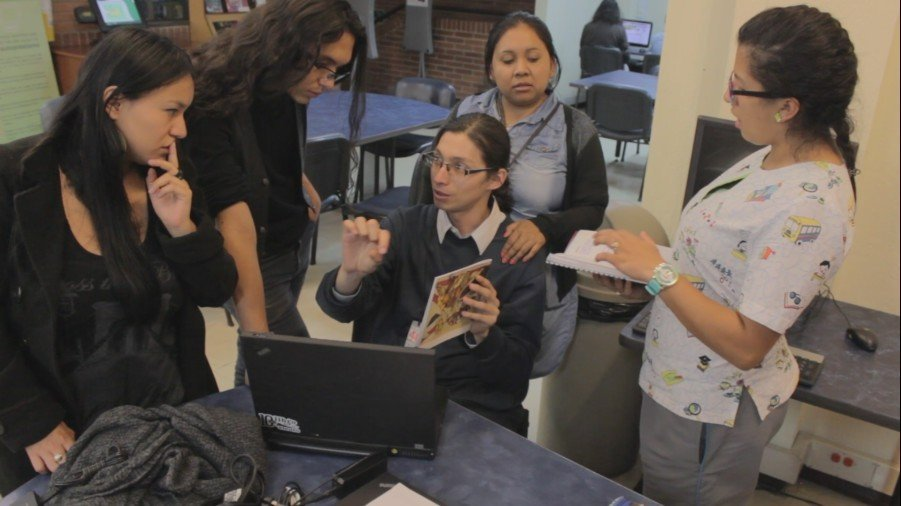

El pueblo de Suba, se encontraba dentro de uno de los cuatro principales territorios de la confederación del Zipa de Bakata, siendo una de las poblaciones más importantes al contar con el Consejo Supremo de Justicia, el cual era presidido por el Ubzaque Zhuba. (Cacique de Suba). La importancia geográfica del pueblo de Suba en la confederación del Zipa, residía en el valor espiritual de la Laguna sagrada de Tibabuyes, (Tierra de Labradores) en la cual se celebraba la “Fiesta de las Flores”, donde asistían los caciques de Cota, Funza y Engativá a realizar sus ofrendas. De igual importancia lo son sus cerros, los cuales hasta el día de hoy, son insignia de la comunidad y de la localidad, a los cuales actualmente se le reconocen como uno de los principales “pulmones de la Ciudad”. En 1538, Llega Gonzalo Jiménez de Quesada, quien entabla conversaciones con el Ubzaque de Suba, y delega a los encomenderos Antonio Días Cardoso y Hernán Camilo Monsilva la “refundación” del pueblo de Suba hacia el año de 1550. Año en el cual empiezan las transformaciones socio-económicas de la comunidad, la cual tuvo que ser regida por el modelo económico y político de la Encomienda y Mita, que duraron más de 200 años, hasta finales del siglo XVIII. El 16 de Abril de 1770 se prohíbe el idioma (Muyskkubun) según cedula real del Rey Carlos III de España, lo cual hizo del uso de la lengua algo prohibido para todos los Muiscas, haciendo que el idioma se extinguiera un siglo mas tarde. La participación de la comunidad de Suba en la Revolución de los Comuneros (1780) y la Independencia (1810) permitieron que hacia el 11 de Octubre de 1821, se dictara la ley “Sobre la abolición del tributo, i repartimiento de los resguardos de indígenas” que permitió a las familias de la comunidad tener control sobre sus tierras , protegiendo a la comunidad como resguardo, tan solo unos años más; puesto que hacia el 16 de Noviembre de 1875 como producto de unas políticas de desingenizacion en el centro del país, transformaron el resguardo a Municipio, decretado por el Estado Soberano de Cundinamarca.
La apertura del resguardo de Suba, se ve marcado por el modelo de “progreso” de la modernidad, que se expreso a lo largo del siglo XX, en transformaciones culturales y sociales: creación de acueductos, escuelas, haciendas, chircales y fenómenos de conurbanizacion entre otros, que comenzaron a transformar los procesos sociales y geográficos de los indígenas Muiscas de Suba, a quienes ya se les identificaban como “campesinos” en concordancia de las políticas económicas e ideológicas del Estado. Hacia la mitad del Siglo, en 1954 según decreto Ley 3640 el municipio de Suba, se anexa como Distrito Especial al municipio de Bogotá, según ordenanza numero 7, lo cual desemboca en la transformación total del territorio y de los usos y costumbres de la comunidad Muisca. Fenómenos propios de la urbe, como acaparamientos de tierras, urbanización, cambio del uso agrícola, urbanización piratas, son los conflictos con los que se enfrenta la comunidad en la segunda mitad del Siglo.
En los últimos años de los 80` el pueblo Muisca Suba, se comienza a organizar nuevamente bajo la forma de Cabildo que hacía años atrás había desaparecido, para proteger sus tierras, del veloz proceso de pérdida de territorio por el fenómeno de la voraz urbanización de Bogotá, lo cual fue ratificado el 25 de Enero de 1991 por el Gobierno Nacional como Distrital, obteniendo desde la Dirección General de Asuntos Indígenas del Ministerio del Interior, el concepto y aval de la existencia de la comunidad. Esto permitió que la comunidad pudiera organizarse bajo la forma de Cabildo, lo que permitió por un lado, proteger y salvaguardar las tradiciones y pensamiento, y por el otro, pensar en la reconstrucción cultural del legado ancestral de su pueblo.
Después de este suceso, comunidades que llevaban ya un proceso previo de lucha para su reconocimiento legal, (Cota y Chía) se les unió otras comunidades que empezaron el proceso de reconocimiento por parte del Estado. Entre las comunidades que son reconocidas por el Estado colombiano como indígenas Muisca, se pueden mencionar las siguientes: comunidad de Bosa (Santa Fe de Bogotá, D.C. 1999) y comunidad de Suba (Santa Fe de Bogotá), comunidad del Resguardo de Cota (Cundinamarca 1992), comunidad de las veredas Fonquetá y Cerca de Piedra en Chía (Cundinamarca 2003), y la Comunidad de Sesquilé (Cundinamarca 2003). Cada una de estas comunidades presenta diferencias sobre la situación de sus terrenos comunales, puesto que el reconocimiento de la forma política de Cabildo no implica el reconocimiento de Resguardos. Por ello, solo la comunidad de Cota tiene la figura de “resguardo”, mientras que el resto de comunidades solo tienen la forma de Cabildos. La figura de Cabildos Indígenas, se logro a través del decreto 2164 de 1995, el cual definió a los cabildos como: "Una entidad pública especial, cuyos integrantes son miembros de una comunidad indígena, elegidos y reconocidos por ésta, con una organización sociopolítica tradicional, cuya función es representar legalmente a la comunidad, ejercer la autoridad y realizar las actividades que les atribuyan las leyes, los usos, las costumbres y el reglamento interno de cada comunidad."
La Comunidad Muisca de Bosa junto a otras comunidades Muiscas de la Sabana de Bogotá como Suba, tuvieron que vivir fuertemente los procesos de Conquista y Colonia, que se vieron reflejados en instituciones como la Mita, la Encomienda y el Resguardo que terminaron fragmentando su relación tradicional con el territorio. Hasta finales del Siglo XIX se dio la disolución de la mayoría de resguardos indígenas Muiscas del altiplano Cundiboyacense, es a partir de este momento, que la comunidad se auto identifica como campesina hasta principios de 1991 cuando se efectúa la reforma constitucional que define el Estado Colombiano como un Estado Multiétnico y Pluricultural, reconociendo de esta manera los derechos de orden especial, de los que son beneficiarios los pueblos indígenas. Es así que las comunidades de Suba, Bosa, Cota, Chía y Sesquilé, inician procesos de reivindicación de su identidad indígena, logrando obtener por parte del Ministerio del Interior y de Justicia el reconocimiento como Entidades públicas de carácter especial en los siguientes años.
Bosa recibe su nombre de un vocablo Muisca que significa “cercado” y “segundo” o “cercado que guarda y defiende las mieses”. La vida indígena en la localidad se desarrolló alrededor de la agricultura de los minifundios y el trabajo a cambio de un jornal en las cercanas haciendas de la Sabana de Bogotá. Durante generaciones las familias Muiscas originarias mantuvieron esta forma de vida campesina, reconociéndose a sí mismos como autóctonos de Bosa, “nacidos y criados” en su territorio y por ello raizales del mismo. Sin embargo, con la anexión del municipio a la capital del país aumentó progresivamente la presión sobre las tierras. Para las dos últimas décadas del siglo XX este proceso incluyó la llegada de urbanizadores piratas y otros actores que se apoderaron ilegalmente de predios acelerando radicalmente el proceso con urbanización de la ciudad.

“¿Si ve cómo van cambiando las cosas? entonces a raíz de todas esas cosas, uno va cambiando, en caso de nuestro territorio, de lo que ya hablaron los compañeros, nosotros vivíamos muy felices, ya hoy en día ya estamos es desplazados por que ya la mayoría de gente nos la han desplazado de nuestras tierras, ¿qué ha pasado los urbanizadores piratas? han robado a la gente y nos seguirán robando y no tenemos quien nos defienda” Abuelo Efraín Chiguasuque.
El Cabildo indígena Muisca de Bosa, fue constituido en 1999, esto les ha permitido a las familias de la comunidad fortalecer redes de apoyo tanto familiares como comunitarias, en pro del fortalecimiento y revitalización de la cultura Muisca de Bosa al interior de la ciudad.
En la primera etapa de creación de los Cabildos Muiscas, se debe resaltar que el pivote principal, por el cual se articularon las comunidades para la reivindicación de su etnicidad Muisca, fue el problema de propiedad de tierras. Durante los últimos 30 años, la agresiva expansión urbana en la capital y la introducción de nuevos habitantes en las comunidades, acelero los cambios de paisajes, vocación de suelos rurales y vidas comunitarias de los Muiscas, lo cual provoco que existieran líos legales, sobre la propiedad de tierras entre los nuevos habitantes y los nativos. En el caso de la comunidad de Suba, hacia los años 80‟ y 90‟ la rápida urbanización de lugares, la piratería, el robo y engaño sobre los títulos de propiedad, hizo que la comunidad se organizara para la defensa colectiva de las tierras de la comunidad. Qué motivó que resurgiera el cabildo indígena? -Lo que me hizo moverme fue la problemática que estaba sufriendo nuestra comunidad indígena, que siendo herederos del resguardo estaba perdiendo día tras día sus derechos. Nos estaban despojando de las tierras que fueron asignadas a nuestros abuelos. Por otra parte, me interesaba revivir la historia de la comunidad muisca de Suba. Gobernador Muisca de Suba, Carlos Arturo Caita (Gaitán: 1994) En el caso de Cota, su organización se promovió para la reestructuración del Resguardo como propiedad colectiva, en Bosa (quien aun era una vereda) junto a Chía, ocurrió de manera similar. Sesquile, es una excepción en el caso, puesto que la organización como Cabildo giro en torno a la figura de Carlos Mamanche, joven maestro de escuela que se inicio como Payé (medico tradicional) en las comunidades Ingas del Putumayo, quien luego de esto decidió volver a su pueblo natal (Sesquile) y comenzar a formar la comunidad allí.
Esta lucha territorial se dio el marco de cambio de las políticas nacionales, durante los años 70‟ la comunidad de Cota había estado trabajando con el CRIC, y en el 91‟ con la recién creada Constitución del 91, se abrió todo un espacio que permitió a varios grupos indígenas exigir el reconocimiento indígena. Fenómenos que se presentación tanto en el centro del país, como en Putumayo, Cauca, Nariño y la Sierra Nevada de Santa Martha.
El reconocimiento como cabildos se realizo bajo el Decreto 2164 de 1995, el cual define a una comunidad indígena de la siguiente manera: “Comunidad o Parcialidad Indígena. Es el grupo o conjunto de familias de ascendencia amerindia, que tienen conciencia de identidad y comparten valores, rasgos, usos o costumbres de su cultura, así como formas de gobierno, gestión, control social o sistemas normativos propios que la distinguen de otras comunidades, tengan o no títulos de propiedad, o que no puedan acreditarlos legalmente, o que sus resguardos fueron disueltos, divididos o declarados vacantes” Bajo esta normatividad, los Cabildos Muiscas en el “Foro de Identidad y Memoria” (1999) Afirmaban lo siguiente: Tenemos una ascendencia amerindia fácilmente comprobable no sólo a partir de la abundancia de testimonios históricos y culturales existentes, muchos de los cuales datan de mediados del siglo XIX, sobre los Resguardos y la comunidad, sino porque en la actualidad siguen vigentes a través de los apellidos –Bulla, Bajonero, Cabiativa, Piracún, Nivia, Niviayo, Yopasá, Caita, Cuenca, Mususú, Neuque, Chízaba, Chipo, Caipa, Quinche, Cera, Landecho, Lorenzano, Rico, Ospina, Córdoba, Triviño, Torres y otros de ascendencia española y europea que están en proceso de legitimación al interior de la comunidad– la descendencia de los propietarios originales de los Resguardos disueltos a fines del siglo XIX. (Cabildo Muisca de Suba: 1999, p 10) La etnicidad y su representación ante el estado también exigía que existiera unas caracterices particulares que permitieran diferenciar a la comunidad Muisca de la población campesina mayoritaria en Colombia, por ello en el mismo foro se menciona las cualidades que permiten reconocer a un indígena Muisca dentro del censo del Cabildo. Son miembros de nuestra comunidad indígena quienes tanto por línea paterna –primer apellido– o por vía materna –segundo apellido– tuvieran un apellido claramente Muisca o uno castellano que apareciera en los padrones de fines de siglo XIX. Hay que destacar que es significativo el número de personas que hoy en día tienen los dos apellidos, por línea paterna y línea materna. -Necesariamente tienen que vivir dentro de los límites de la territorialidad que se reivindica, pues se estima que un elemento de nuestra identidad es la referencia a Resguardos antiguos que fueron disueltos sin el consentimiento de los indígenas de la época.- Los compañeros y/o compañeras permanentes de un hombre y/o mujer Muisca, siempre y cuando vivan en la comunidad; ellos serán adoptados como parte de la parcialidad y considerados como indígenas.- Los hijos de matrimonios mixtos son considerados como Muisca, tanto por línea paterna como materna, siempre y cuando vivan en la comunidad.
Nataly Bulla, Sara Cabiativa, Andrés Bulla, María Angélica Cabiativa, Natalia Caita, Andrés Guerrero, Sarah Arévalo, Diana Garibello, Carlos Herrera, Rosa Chisaba, Mabel Niviayo, Mayra Andrea, Yenny Cardozo, Miguel Maecha, David Yopasa, Diego Gómez, Jorge Yopasa Cardenas, Miguel Yopasa, Ivan Niviayo, Gonzalo Cabiativa, Carlos Andrés Rocha, Carlos Alfoso Cobadela, Luz Adriana Murcia